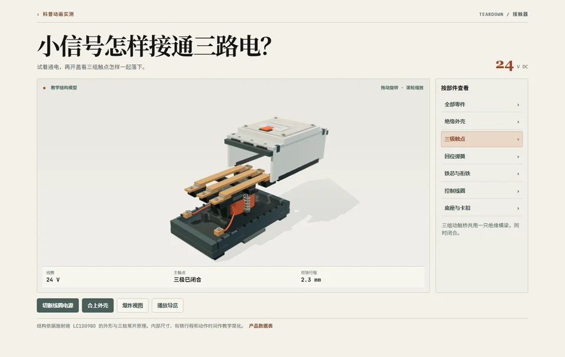
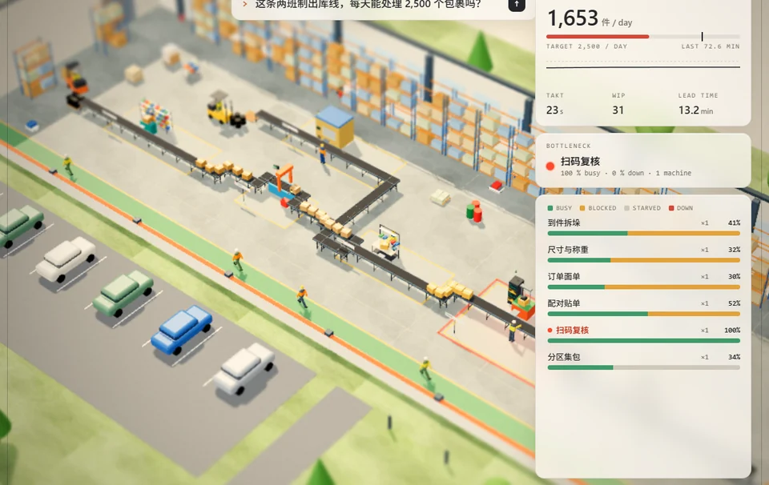
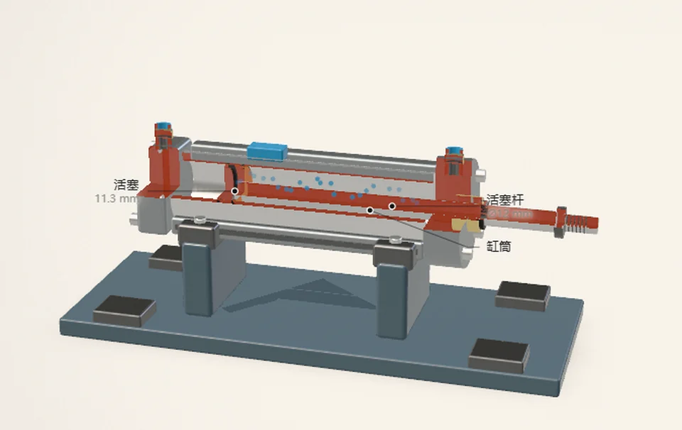
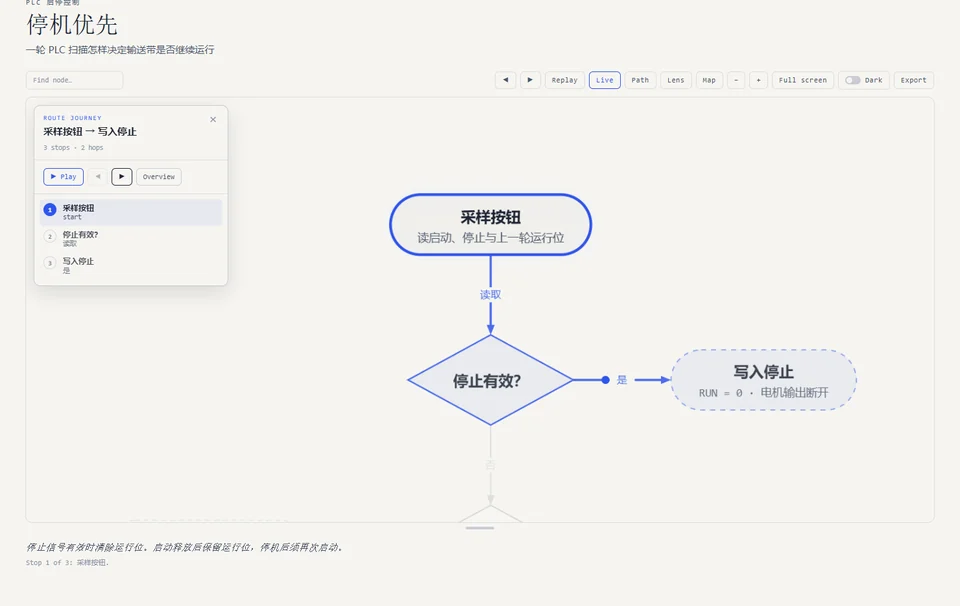
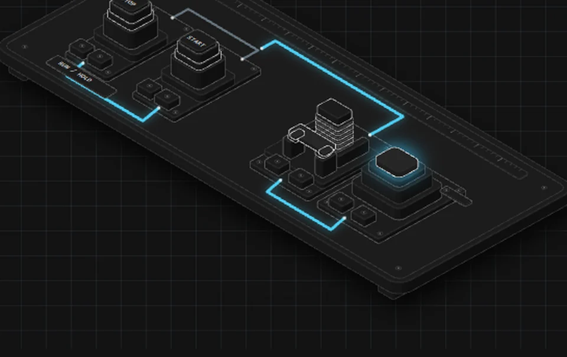
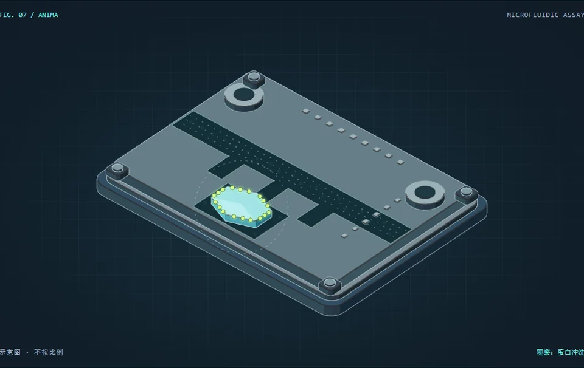

INTERACTIVE SCIENCE / FIELD TEST 07
拆开一个触点，换掉一条分拣线的瓶颈，再冲洗一颗冰晶。把七种科普动画工具，用在能亲手操作的题目上。
Tinycharts · 纸笔流程
免费版包含 9 类。这张试用图按作者条款保留在本机。

teardown · 三维拆解
拆开外壳，跟着线圈、衔铁和触点看一次合闸，再把它们装回去。

factory-skill · 生产仿真
给扫码复核工位加一台设备，看看产量和瓶颈怎么变。

machine-skill · 机械剖视
打开剖视，比较同样压力下伸出和缩回的理论推力。

SeeCode · 代码流程
逐步查看一轮 PLC 扫描，追踪两个按钮同时按下时的路线。

anatomy · 等轴机构图
在继电器台架上启动、松手，再按停止，看自保持触点的动作。

anima · 科学实验
洗去游离的抗冻蛋白，再换一颗新冰晶作对照。